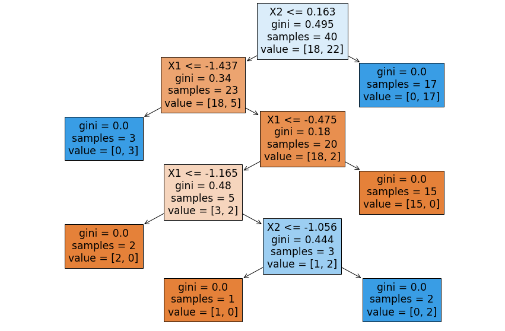
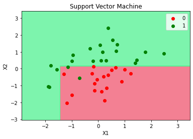
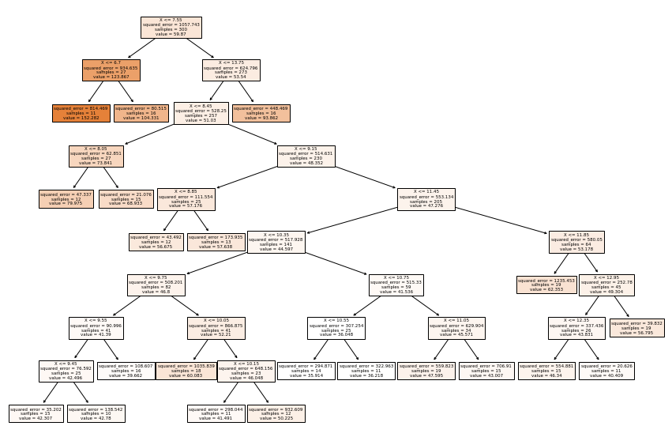

Árboles de clasificación - código¶
Importar librerías:
import pandas as pd
import numpy as np
import matplotlib.pyplot as plt
Importar datos:
df = pd.read_csv("Clasificación.csv", sep=";", decimal=",")
print(df.head())
X1 X2 y
0 50.24 10.06 1
1 47.71 9.16 0
2 48.10 10.18 1
3 52.77 10.24 1
4 49.48 9.57 0
Visualización de los datos:
plt.scatter(df["X1"], df["X2"], marker="^", c=df["y"], cmap=plt.cm.RdYlGn)
plt.xlabel("X1")
plt.ylabel("X2")
Text(0, 0.5, 'X2')

X = df[["X1", "X2"]]
print(X.head())
X1 X2
0 50.24 10.06
1 47.71 9.16
2 48.10 10.18
3 52.77 10.24
4 49.48 9.57
y = df["y"]
print(y.head())
0 1
1 0
2 1
3 1
4 0
Name: y, dtype: int64
Escalado de variables:¶
from sklearn.preprocessing import StandardScaler
scaler = StandardScaler()
X = scaler.fit_transform(X)
print(
X[:10,]
)
[[ 0.29938111 0.48540279]
[-1.17998259 -2.03617016]
[-0.95193838 0.82161252]
[ 1.77874481 0.98971739]
[-0.14501273 -0.88745359]
[ 0.54496718 1.69015432]
[ 0.36954856 2.41860873]
[ 1.0010556 -0.04692927]
[ 0.67945479 1.04575234]
[ 0.32277026 -1.13961089]]
Ajuste del modelo:¶
from sklearn.tree import DecisionTreeClassifier
clf = DecisionTreeClassifier(random_state=0)
clf.fit(X, y)
DecisionTreeClassifier(random_state=0)
y_pred = clf.predict(X)
print(y_pred)
[1 0 1 1 0 1 1 0 1 0 1 0 1 1 1 1 1 1 1 1 0 1 0 0 1 0 0 0 0 0 1 0 0 1 1 0 1
1 0 0]
Evaluación del desempeño (performance):
from sklearn.metrics import accuracy_score
accuracy_score(y, y_pred)
1.0
Modelo sobre ajustado.
Visualización de los resultados:
from matplotlib.colors import ListedColormap
X_Set, y_Set = X, y
X1, X2 = np.meshgrid(
np.arange(start=X_Set[:, 0].min() - 1, stop=X_Set[:, 0].max() + 1, step=0.01),
np.arange(start=X_Set[:, 1].min() - 1, stop=X_Set[:, 1].max() + 1, step=0.01),
)
plt.contourf(
X1,
X2,
clf.predict(np.array([X1.ravel(), X2.ravel()]).T).reshape(X1.shape),
alpha=0.75,
cmap=ListedColormap(("#F0566F", "#51F192")),
)
plt.xlim(X1.min(), X1.max())
plt.ylim(X2.min(), X2.max())
for i, j in enumerate(np.unique(y_Set)):
plt.scatter(
X_Set[y_Set == j, 0],
X_Set[y_Set == j, 1],
c=ListedColormap(("red", "green"))(i),
label=j,
)
plt.title("Support Vector Machine")
plt.xlabel("X1")
plt.ylabel("X2")
plt.legend()
plt.show()
c argument looks like a single numeric RGB or RGBA sequence, which should be avoided as value-mapping will have precedence in case its length matches with x & y. Please use the color keyword-argument or provide a 2D array with a single row if you intend to specify the same RGB or RGBA value for all points. c argument looks like a single numeric RGB or RGBA sequence, which should be avoided as value-mapping will have precedence in case its length matches with x & y. Please use the color keyword-argument or provide a 2D array with a single row if you intend to specify the same RGB or RGBA value for all points.

Visualización del árbol:
from sklearn import tree
feature_names = df.columns.values[0:2]
plt.figure(figsize=(15, 10))
tree.plot_tree(clf, feature_names=feature_names, filled=True);

Regularización¶
Cambiaremos max_depth que por defecto es None.
clf = DecisionTreeClassifier(max_depth=2, random_state=0)
clf.fit(X, y)
y_pred = clf.predict(X)
accuracy_score(y, y_pred)
0.95
X_Set, y_Set = X, y
X1, X2 = np.meshgrid(
np.arange(start=X_Set[:, 0].min() - 1, stop=X_Set[:, 0].max() + 1, step=0.01),
np.arange(start=X_Set[:, 1].min() - 1, stop=X_Set[:, 1].max() + 1, step=0.01),
)
plt.contourf(
X1,
X2,
clf.predict(np.array([X1.ravel(), X2.ravel()]).T).reshape(X1.shape),
alpha=0.75,
cmap=ListedColormap(("#F0566F", "#51F192")),
)
plt.xlim(X1.min(), X1.max())
plt.ylim(X2.min(), X2.max())
for i, j in enumerate(np.unique(y_Set)):
plt.scatter(
X_Set[y_Set == j, 0],
X_Set[y_Set == j, 1],
c=ListedColormap(("red", "green"))(i),
label=j,
)
plt.title("Support Vector Machine")
plt.xlabel("X1")
plt.ylabel("X2")
plt.legend()
plt.show()
c argument looks like a single numeric RGB or RGBA sequence, which should be avoided as value-mapping will have precedence in case its length matches with x & y. Please use the color keyword-argument or provide a 2D array with a single row if you intend to specify the same RGB or RGBA value for all points. c argument looks like a single numeric RGB or RGBA sequence, which should be avoided as value-mapping will have precedence in case its length matches with x & y. Please use the color keyword-argument or provide a 2D array with a single row if you intend to specify the same RGB or RGBA value for all points.

plt.figure(figsize=(10, 5))
tree.plot_tree(clf, feature_names=feature_names, filled=True);
